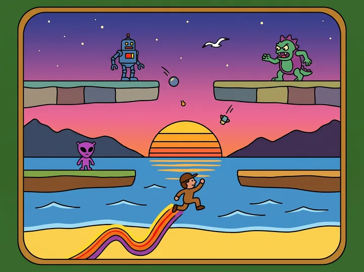

GAMESJUEGOS
POTHOLE RUSH

Commodore 64 · MEGA65
Dodge potholes, collect coins and jump over cones. For the Commodore 64, on disk and cartridge, and for the MEGA65, in full color. Free to download, also for Windows and Linux.
Esquiva baches, recoge monedas y salta conos. Para la Commodore 64, en disco y cartucho, y para la MEGA65, a todo color. De descarga gratuita, también para Windows y Linux.
JUMPING JIM

Commodore 64
Climb seven floors through sliding gaps and dodge eight kinds of baddies. Version 1.1.1 for PAL, NTSC and Drean, free to download.
Sube siete pisos por huecos que se deslizan y esquiva ocho clases de enemigos. Versión 1.1.1 para PAL, NTSC y Drean, de descarga gratuita.
NEWSNOVEDADES
-
Pothole Rush comes to the MEGA65. In full color and edge to edge, with five landscapes, an icy road in the snow, stereo sound and a car radio with eleven tracks. For the MEGA65, and for Windows and Linux with the emulator included.
Pothole Rush llega a la MEGA65. A todo color y de punta a punta de la pantalla, con cinco paisajes, la ruta que resbala en la nieve, sonido en estéreo y la radio del auto con once temas. Para la MEGA65, y para Windows y Linux con el emulador incluido.
-
Version 1.0.2. The perfect jump over a cone, wrenches that count the moment you touch them, and a game that remembers your name. On Windows and Linux, the arrow keys work as a joystick, and on Linux it no longer closes now and then as it opens.
Versión 1.0.2. El salto perfecto sobre el cono, la llave que cuenta apenas la tocas y el juego que recuerda tu nombre. En Windows y Linux, las flechas del teclado como joystick, y en Linux ya no se cierra a veces al abrir.
-
Pothole Rush comes to Windows and Linux. Installer, zip or AppImage: download and play, nothing to set up.
Pothole Rush llega a Windows y Linux. Instalador, zip o AppImage: se descarga y se juega, sin configurar nada.
-
Version 1.0.1. The wrench and the collisions, closer to the original, and the game version shown on the title screen.
Versión 1.0.1. La llave y los choques, más fieles al original, y la versión del juego a la vista en la pantalla de título.
-
Version 1.1.1. It now recognizes the Drean, the Argentinian C64, and calls it by its name.
Versión 1.1.1. Ahora reconoce la Drean, la C64 argentina, y la llama por su nombre.